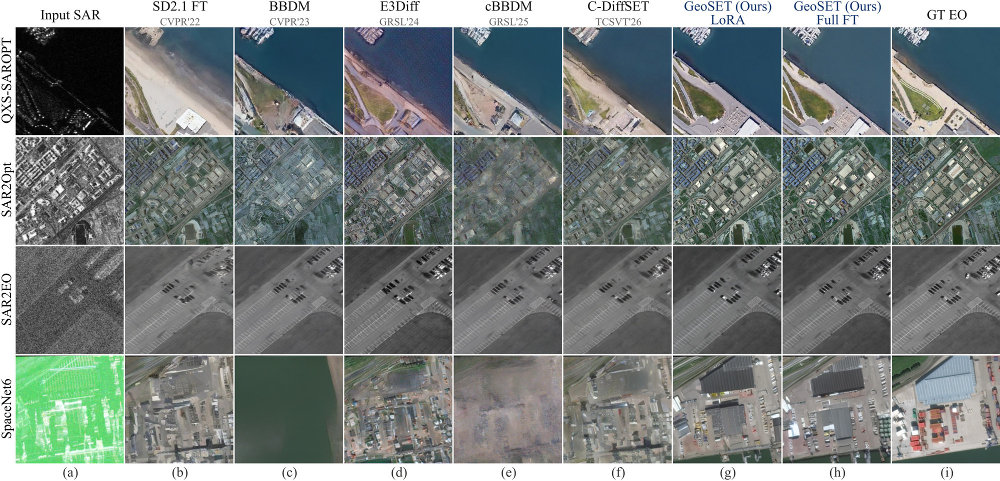
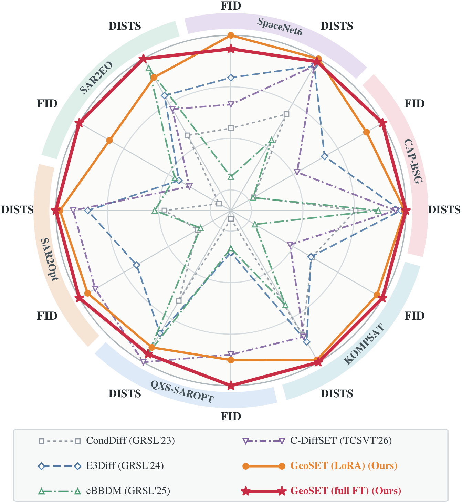
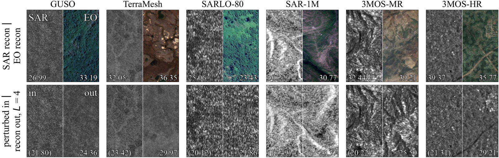

Pretrain once, adapt to many
One parent model, pretrained on 3M+ curated SAR–EO pairs, adapted to each benchmark with LoRA or full fine-tuning.

More scenes Fig. 5 · four benchmarks


All methods, same scenes
Every retrained baseline and both GeoSET variants on the same SAR input, 20 scenes per benchmark. Select a tile to compare it with the ground truth.
Use the arrows or the ← → keys to change scene · click a tile to open the comparison sliderSwipe or use the arrows to change scene · tap a tile to open the comparison slider
Quantitative results
Across full fine-tuning and LoRA, GeoSET achieves the best reported FID on all six benchmarks and the best DISTS on five.


| Method | Venue | QXS-SAROPT | SAR2Opt | ||||||||||||
|---|---|---|---|---|---|---|---|---|---|---|---|---|---|---|---|
| FID↓ | DISTS↓ | KID↓ | DINO↑ | LPIPS↓ | SSIM↑ | PSNR↑ | FID↓ | DISTS↓ | KID↓ | DINO↑ | LPIPS↓ | SSIM↑ | PSNR↑ | ||
| General image-to-image translation methods | |||||||||||||||
| pix2pix | CVPR'17 | 174.6 | 0.373 | 0.1713 | 0.275 | 0.665 | 0.203 | 12.33 | 261.9 | 0.347 | 0.2164 | 0.277 | 0.657 | 0.199 | 13.39 |
| CycleGAN | ICCV'17 | 115.5 | 0.362 | 0.0802 | 0.283 | 0.647 | 0.278 | 13.25 | 139.1 | 0.323 | 0.0343 | 0.374 | 0.642 | 0.188 | 12.68 |
| pix2pixHD | CVPR'18 | 85.7 | 0.298 | 0.0492 | 0.403 | 0.573 | 0.358 | 16.13 | 146.3 | 0.283 | 0.0654 | 0.475 | 0.567 | 0.268 | 15.95 |
| SPADE | CVPR'19 | 90.7 | 0.292 | 0.0607 | 0.366 | 0.599 | 0.320 | 14.53 | 142.5 | 0.265 | 0.0518 | 0.447 | 0.597 | 0.234 | 14.47 |
| DDPM (SR3) | TPAMI'22 | 43.8 | 0.311 | 0.0189 | 0.425 | 0.620 | 0.359 | 14.04 | 122.5 | 0.295 | 0.0437 | 0.497 | 0.610 | 0.313 | 13.65 |
| SD2.1 FT | CVPR'22 | 19.1 | 0.257 | 0.0042 | 0.489 | 0.561 | 0.348 | 15.40 | 71.8 | 0.211 | 0.0094 | 0.600 | 0.541 | 0.293 | 16.24 |
| BBDM | CVPR'23 | 76.6 | 0.270 | 0.0479 | 0.414 | 0.568 | 0.352 | 15.34 | 143.1 | 0.290 | 0.0671 | 0.466 | 0.590 | 0.276 | 15.29 |
| ControlNet | ICCV'23 | 50.4 | 0.307 | 0.0211 | 0.458 | 0.604 | 0.297 | 13.42 | 140.5 | 0.350 | 0.0480 | 0.479 | 0.643 | 0.217 | 11.73 |
| HI-Diff | NeurIPS'23 | 324.3 | 0.539 | 0.3269 | 0.215 | 0.692 | 0.457 | 17.10 | 319.8 | 0.473 | 0.2357 | 0.277 | 0.692 | 0.384 | 17.36 |
| ResShift | NeurIPS'23 | 140.2 | 0.334 | 0.0872 | 0.295 | 0.607 | 0.217 | 14.20 | 141.7 | 0.304 | 0.0515 | 0.435 | 0.597 | 0.177 | 14.31 |
| StegoGAN | CVPR'24 | 106.8 | 0.384 | 0.0707 | 0.261 | 0.658 | 0.254 | 12.96 | 149.8 | 0.332 | 0.0396 | 0.362 | 0.652 | 0.162 | 12.39 |
| SAR-to-EO image translation (SET) methods | |||||||||||||||
| CondDiff | GRSL'23 | 88.6 | 0.355 | 0.0537 | 0.310 | 0.730 | 0.213 | 11.55 | 211.8 | 0.415 | 0.1379 | 0.343 | 0.686 | 0.248 | 12.48 |
| E3Diff | GRSL'24 | 47.8 | 0.278 | 0.0167 | 0.379 | 0.530 | 0.302 | 16.44 | 104.7 | 0.232 | 0.0306 | 0.541 | 0.529 | 0.249 | 16.09 |
| cBBDM | GRSL'25 | 50.6 | 0.246 | 0.0284 | 0.492 | 0.539 | 0.372 | 16.02 | 222.3 | 0.377 | 0.1521 | 0.413 | 0.571 | 0.361 | 17.05 |
| C-DiffSET | TCSVT'26 | 19.9 | 0.233 | 0.0055 | 0.522 | 0.526 | 0.380 | 16.92 | 78.1 | 0.214 | 0.0138 | 0.601 | 0.529 | 0.314 | 16.81 |
| GeoSET (LoRA) | – | 19.3 | 0.254 | 0.0050 | 0.544 | 0.564 | 0.326 | 14.67 | 74.6 | 0.200 | 0.0066 | 0.626 | 0.535 | 0.278 | 15.50 |
| GeoSET (full FT) | – | 16.9 | 0.244 | 0.0032 | 0.558 | 0.553 | 0.332 | 15.07 | 71.1 | 0.196 | 0.0052 | 0.614 | 0.532 | 0.279 | 15.66 |
| Method | SAR2EO | SpaceNet6 | ||||||||||||
|---|---|---|---|---|---|---|---|---|---|---|---|---|---|---|
| FID↓ | DISTS↓ | KID↓ | DINO↑ | LPIPS↓ | SSIM↑ | PSNR↑ | FID↓ | DISTS↓ | KID↓ | DINO↑ | LPIPS↓ | SSIM↑ | PSNR↑ | |
| General image-to-image translation methods | ||||||||||||||
| pix2pix | 169.9 | 0.315 | 0.1551 | 0.400 | 0.573 | 0.455 | 18.06 | 166.7 | 0.242 | 0.1091 | 0.589 | 0.419 | 0.459 | 17.07 |
| CycleGAN | 360.7 | 0.522 | 0.3903 | 0.369 | 0.683 | 0.300 | 15.17 | 119.3 | 0.219 | 0.0436 | 0.660 | 0.373 | 0.478 | 16.88 |
| pix2pixHD | 106.0 | 0.254 | 0.0638 | 0.543 | 0.439 | 0.619 | 21.68 | 175.1 | 0.246 | 0.1136 | 0.682 | 0.361 | 0.525 | 19.21 |
| SPADE | 98.5 | 0.260 | 0.0646 | 0.504 | 0.501 | 0.562 | 19.81 | 179.7 | 0.242 | 0.1228 | 0.662 | 0.385 | 0.489 | 17.77 |
| DDPM (SR3) | 85.0 | 0.272 | 0.0390 | 0.529 | 0.471 | 0.479 | 13.49 | 219.1 | 0.333 | 0.1616 | 0.419 | 0.622 | 0.111 | 12.45 |
| SD2.1 FT | 67.7 | 0.270 | 0.0282 | 0.511 | 0.487 | 0.459 | 15.46 | 124.7 | 0.196 | 0.0537 | 0.612 | 0.348 | 0.513 | 19.29 |
| BBDM | 63.7 | 0.231 | 0.0245 | 0.613 | 0.418 | 0.601 | 19.08 | 230.2 | 0.381 | 0.1647 | 0.470 | 0.468 | 0.449 | 18.03 |
| ControlNet | 87.8 | 0.315 | 0.0424 | 0.509 | 0.523 | 0.418 | 12.93 | 131.3 | 0.279 | 0.0635 | 0.615 | 0.413 | 0.448 | 14.45 |
| HI-Diff | 315.5 | 0.556 | 0.3007 | 0.155 | 0.647 | 0.672 | 21.68 | 261.2 | 0.300 | 0.2036 | 0.499 | 0.403 | 0.589 | 20.61 |
| ResShift | 130.6 | 0.273 | 0.0768 | 0.418 | 0.510 | 0.504 | 19.29 | 155.4 | 0.230 | 0.0858 | 0.540 | 0.367 | 0.421 | 18.58 |
| StegoGAN | 384.7 | 0.550 | 0.4343 | 0.387 | 0.698 | 0.180 | 12.49 | 113.1 | 0.225 | 0.0361 | 0.649 | 0.388 | 0.457 | 16.04 |
| SAR-to-EO image translation (SET) methods | ||||||||||||||
| CondDiff | 113.2 | 0.317 | 0.0639 | 0.461 | 0.551 | 0.334 | 11.12 | 160.1 | 0.274 | 0.1012 | 0.514 | 0.517 | 0.198 | 14.68 |
| E3Diff | 55.5 | 0.228 | 0.0148 | 0.550 | 0.446 | 0.514 | 20.58 | 110.6 | 0.197 | 0.0440 | 0.696 | 0.361 | 0.462 | 18.32 |
| cBBDM | 52.7 | 0.191 | 0.0214 | 0.675 | 0.369 | 0.650 | 21.73 | 280.4 | 0.347 | 0.2620 | 0.450 | 0.419 | 0.447 | 19.72 |
| Seg-CycleGAN | – | – | – | – | – | – | – | 131.4 | 0.229 | 0.0611 | 0.649 | 0.386 | 0.471 | 16.62 |
| C-DiffSET | 64.0 | 0.252 | 0.0257 | 0.527 | 0.462 | 0.512 | 17.09 | 132.3 | 0.197 | 0.0614 | 0.611 | 0.346 | 0.520 | 19.43 |
| GeoSET (LoRA) | 29.5 | 0.202 | 0.0042 | 0.691 | 0.440 | 0.547 | 19.19 | 87.9 | 0.189 | 0.0162 | 0.733 | 0.338 | 0.513 | 17.95 |
| GeoSET (full FT) | 24.5 | 0.181 | 0.0032 | 0.730 | 0.399 | 0.564 | 19.72 | 94.1 | 0.192 | 0.0183 | 0.724 | 0.342 | 0.515 | 17.99 |
| Method | CAP-BSG | KOMPSAT | ||||||||||||
|---|---|---|---|---|---|---|---|---|---|---|---|---|---|---|
| FID↓ | DISTS↓ | KID↓ | DINO↑ | LPIPS↓ | SSIM↑ | PSNR↑ | FID↓ | DISTS↓ | KID↓ | DINO↑ | LPIPS↓ | SSIM↑ | PSNR↑ | |
| General image-to-image translation methods | ||||||||||||||
| pix2pix | 245.8 | 0.402 | 0.2086 | 0.254 | 0.626 | 0.251 | 13.77 | 255.6 | 0.346 | 0.2892 | 0.298 | 0.669 | 0.116 | 10.33 |
| CycleGAN | 100.0 | 0.327 | 0.0485 | 0.365 | 0.569 | 0.353 | 16.84 | 160.8 | 0.359 | 0.1105 | 0.299 | 0.653 | 0.139 | 10.14 |
| pix2pixHD | 212.7 | 0.335 | 0.1673 | 0.301 | 0.570 | 0.367 | 17.23 | 223.2 | 0.379 | 0.2004 | 0.305 | 0.649 | 0.128 | 11.24 |
| SPADE | 187.5 | 0.354 | 0.1407 | 0.287 | 0.593 | 0.348 | 16.20 | 226.3 | 0.377 | 0.2106 | 0.303 | 0.670 | 0.157 | 11.47 |
| DDPM (SR3) | 132.0 | 0.403 | 0.0815 | 0.297 | 0.646 | 0.373 | 12.41 | 119.8 | 0.344 | 0.0695 | 0.365 | 0.645 | 0.121 | 10.21 |
| SD2.1 FT | 98.6 | 0.348 | 0.0406 | 0.321 | 0.587 | 0.380 | 15.86 | 100.7 | 0.333 | 0.0535 | 0.359 | 0.635 | 0.150 | 11.23 |
| BBDM | 145.2 | 0.346 | 0.0789 | 0.305 | 0.577 | 0.360 | 16.16 | 154.3 | 0.343 | 0.1101 | 0.322 | 0.656 | 0.145 | 9.74 |
| ControlNet | 120.5 | 0.426 | 0.0466 | 0.290 | 0.660 | 0.303 | 13.10 | 115.5 | 0.358 | 0.0672 | 0.357 | 0.671 | 0.137 | 9.63 |
| HI-Diff | 200.0 | 0.496 | 0.1328 | 0.234 | 0.697 | 0.463 | 16.75 | 277.8 | 0.523 | 0.2664 | 0.223 | 0.756 | 0.226 | 12.39 |
| ResShift | 201.2 | 0.378 | 0.1282 | 0.280 | 0.611 | 0.212 | 15.11 | 247.9 | 0.348 | 0.2193 | 0.306 | 0.652 | 0.115 | 11.12 |
| StegoGAN | 97.3 | 0.319 | 0.0464 | 0.367 | 0.567 | 0.345 | 16.89 | 325.4 | 0.497 | 0.3565 | 0.222 | 0.713 | 0.092 | 12.70 |
| SAR-to-EO image translation (SET) methods | ||||||||||||||
| CondDiff | 212.1 | 0.418 | 0.1347 | 0.246 | 0.734 | 0.234 | 10.50 | 115.6 | 0.349 | 0.0672 | 0.352 | 0.692 | 0.082 | 8.70 |
| E3Diff | 87.2 | 0.324 | 0.0337 | 0.346 | 0.543 | 0.332 | 16.79 | 116.5 | 0.333 | 0.0762 | 0.388 | 0.600 | 0.147 | 11.74 |
| cBBDM | 214.6 | 0.365 | 0.1580 | 0.280 | 0.578 | 0.437 | 17.91 | 245.3 | 0.434 | 0.2300 | 0.279 | 0.666 | 0.189 | 11.92 |
| C-DiffSET | 113.0 | 0.333 | 0.0517 | 0.310 | 0.573 | 0.382 | 17.03 | 144.9 | 0.344 | 0.0943 | 0.315 | 0.640 | 0.144 | 11.17 |
| GeoSET (LoRA) | 64.7 | 0.318 | 0.0154 | 0.402 | 0.566 | 0.343 | 16.85 | 72.0 | 0.299 | 0.0294 | 0.446 | 0.625 | 0.152 | 10.64 |
| GeoSET (full FT) | 58.9 | 0.316 | 0.0109 | 0.402 | 0.565 | 0.352 | 16.60 | 69.8 | 0.295 | 0.0292 | 0.447 | 0.620 | 0.153 | 10.78 |
Pretraining corpus Table 1
| Source | Orig. samples | Kept pairs | Drop (%) | Crop equivalents | Mix (%) |
|---|---|---|---|---|---|
| GUSO | 589,143 | 585,424 | 0.63 | 2,341,696 | 38.73 |
| TerraMesh | 8,194,048 | 1,741,434 | 78.75 | 1,741,434 | 28.80 |
| SARLO-80 | 87,870 | 77,932 | 11.31 | 1,246,912 | 20.62 |
| SAR-1M | 1,130,379 | 688,458 | 39.09 | 688,458 | 11.39 |
| 3MOS | 113,074 | 111,496 | 1.40 | 27,874 | 0.46 |
| Total | 10,114,514 | 3,204,744 | 68.32 | 6,046,374 | 100.00 |
Ablations and analysis Tables 5, 4 and 7
| Configuration | SAR2EO | SpaceNet6 | ||||
|---|---|---|---|---|---|---|
| FID↓ | DISTS↓ | LPIPS↓ | FID↓ | DISTS↓ | LPIPS↓ | |
| SD2.1 Full FT | 67.7 | 0.270 | 0.487 | 124.7 | 0.196 | 0.348 |
| FLUX.2 LoRA (Backbone) | 71.2 | 0.275 | 0.481 | 117.4 | 0.201 | 0.361 |
| + Pretraining corpus | 50.5 | 0.250 | 0.470 | 107.9 | 0.194 | 0.351 |
| + SAR encoder | 39.8 | 0.220 | 0.448 | 94.2 | 0.193 | 0.347 |
| + Speckle aug. (GeoSET) | 29.5 | 0.202 | 0.440 | 87.9 | 0.189 | 0.338 |
Each step improves FID, DISTS and LPIPS on both datasets (SAR2EO FID 71.2 → 50.5 → 39.8 → 29.5). The last row is the complete GeoSET (LoRA) configuration, as in Table 3.
(a) Stage 1 Encoder Reconstruction
| Source | Original SAR | Perturbed SAR | EO | ||||
|---|---|---|---|---|---|---|---|
| Before | After | Δ | Before | After | Δ | ||
| GUSO | 27.47 | 29.18 | +1.71 | 23.54 | 26.96 | +3.42 | 31.02 |
| TerraMesh | 20.11 | 32.04 | +11.93 | 19.12 | 30.48 | +11.37 | 33.95 |
| SARLO-80 | 17.39 | 19.21 | +1.82 | 16.71 | 18.49 | +1.78 | 27.81 |
| SAR-1M | 29.95 | 31.25 | +1.30 | 22.01 | 26.99 | +4.98 | 33.59 |
| 3MOS | 35.15 | 36.07 | +0.92 | 27.30 | 31.92 | +4.61 | 34.62 |
| Average | 26.01 | 29.55 | +3.54 | 21.74 | 26.97 | +5.23 | 32.20 |
(b) Downstream Adaptation Efficiency
| GeoSET | Full FT | LoRA |
|---|---|---|
| Trainable parameters | 3.852B | 23.10M |
| Trainable fraction | 100% | 0.5997% |
| Per-dataset storage | 30.8 GB | 185 MB |
| Peak memory | 96.9 GB | 49.1 GB |
| Batch size | 16 | 16 |
| Throughput | 67 img/s | 94 img/s |
| Wall time/dataset | 1.34 h | 0.98 h |
(a) Encoder training raises average SAR PSNR by +3.54 dB on original and +5.23 dB on perturbed inputs. (b) LoRA trains 23.10M parameters (0.5997%), stores 185 MB instead of 30.8 GB and takes 0.98 h per dataset.


| PSNR↑ | LPIPS↓ | |||||
|---|---|---|---|---|---|---|
| Source | True | Shuffled | Null | True | Shuffled | Null |
| GUSO | 13.36 | 10.24 | 10.58 | 0.548 | 0.678 | 0.690 |
| SARLO-80 | 15.88 | 11.96 | 11.65 | 0.514 | 0.678 | 0.693 |
| TerraMesh | 13.69 | 10.94 | 10.80 | 0.491 | 0.670 | 0.695 |
True SAR conditioning is best on PSNR and LPIPS for all three pretraining sources.
Three stages, one parent

- Stage 1Speckle-robust SAR encoder. Reconstructs SAR from speckle-perturbed input through a frozen decoder.
- Stage 2Generalist FLUX.2 pretraining. The generator, conditioned on SAR instead of text, is pretrained on over 3M curated SAR–EO pairs.
- Stage 3Per-benchmark adaptation. LoRA (0.60% of generator parameters, ≈1 h per dataset) or full fine-tuning.
BibTeX
@article{do2026geoset,
title={GeoSET: Generalist Foundation Model for SAR-to-EO Image Translation},
author={Do, Jeonghyeok and Kim, Munchurl},
journal={arXiv preprint arXiv:2609.37496},
year={2026}
}@article{do2026cdiffset,
title={C-diffset: Leveraging latent diffusion for sar-to-eo image translation with confidence-guided reliable object generation},
author={Do, Jeonghyeok and Lee, Jaehyup and Lee, Seungchul and Kim, Munchurl},
journal={IEEE Transactions on Circuits and Systems for Video Technology},
year={2026},
publisher={IEEE}
}